JavaScript应用
1.Web APIs
1.1 API
API（Application Programming Interface,应用程序编程接口）是一些预先定义的函数，目的是提供应用程序与开发人员基于某软件或硬件得以访问一组例程的能力，而又无需访问源码，或理解内部工作机制的细节。
简单理解： API 是给程序员提供的一种工具，以便能更轻松的实现想要完成的功能。
1.2Web API
Web API是浏览器提供的一套操作浏览器功能和页面元素的 API ( BOM 和 DOM )。
现阶段我们主要针对于浏览器讲解常用的 API , 主要针对浏览器做交互效果。
2.DOM
1. DOM 简介
1.1 什么是 DOM
文档对象模型（Document Object Model，简称 DOM），是W3C组织推荐的处理可扩展标记语言（HTML 或者XML）的标准编程接口。
W3C 已经定义了一系列的 DOM 接口，通过这些DOM 接口可以改变网页的内容、结构和样式。
1.2 DOM 树
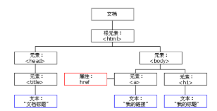
- 文档：一个页面就是一个文档，DOM 中使用 document 表示
- 元素：页面中的所有标签都是元素，DOM 中使用 element 表示
- 节点：网页中的所有内容都是节点（标签、属性、文本、注释等），DOM 中使用 node 表示
DOM 把以上内容都看做是对象
2.获取元素
2.1 如何获取页面元素
2.2 根据 ID 获取
使用 getElementById() 方法可以获取带有 ID 的元素对象。
1 | document.getElementById('id'); |
==因为我们文档页面从上往下加载，所以先得有标签所以我们script写到标签的下面==
使用 console.dir() 可以打印我们获取的元素对象，更好的查看对象里面的属性和方法。
2.3 根据标签名获取
使用 getElementsByTagName() 方法可以返回带有指定标签名的对象的集合。
1 | document.getElementsByTagName('标签名'); |
2.4 通过 HTML5 新增的方法获取
1 | 1. document.getElementsByClassName(‘类名’)；// 根据类名返回元素对象集合 |
==注意:==
querySelector 和 querySelectorAll里面的选择器需要加符号,比如:document.querySelector(‘#nav’);
2.5 获取特殊元素（body，html）
获取body元素
1 | 1. doucumnet.body // 返回body元素对象 |
获取html元素
1 | 1. document.documentElement // 返回html元素对象 |
3. 事件基础
3.1 事件概述
JavaScript 使我们有能力创建动态页面，而事件是可以被JavaScript 侦测到的行为。
3.2 事件三要素
- 事件源 （谁）
- 事件类型 （什么事件）
- 事件处理程序（做啥）
1 | var btn = document.getElementById('btn'); |
3.3 执行事件的步骤
- 获取事件源
- 注册事件（绑定事件）
- 添加事件处理程序（采取函数赋值形式）
==常见的鼠标事件==
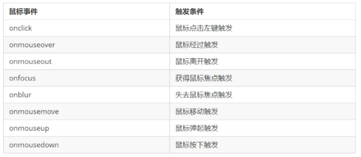
4.操作元素
JavaScript 的 DOM 操作可以改变网页内容、结构和样式，我们可以利用 DOM 操作元素来改变元素里面的内 容 、属性等。注意以下都是属性
4.1 改变元素内容
element.innerText
从起始位置到终止位置的内容, 但它去除 html 标签， 同时空格和换行也会去掉element.innerHTML
起始位置到终止位置的全部内容，包括 html 标签，同时保留空格和换行
4.2 常用元素的属性操作
- innerText、innerHTML 改变元素内容
- src、href
- id、alt、title
4.3 表单元素的属性操作
利用 DOM 可以操作如下表单元素的属性：
type、value、checked、selected、disabled
this指向事件函数的调用者
4.4 样式属性操作
我们可以通过JS 修改元素的大小、颜色、位置等样式。
1 | 1. element.style 行内样式操作 |
注意：
1.JS 里面的样式采取驼峰命名法 比如 fontSize、 backgroundColor
2.JS 修改 style 样式操作，产生的是行内样式，CSS 权重比较高
4.6 自定义属性的操作
- 获取属性值
element.属性 设置内置属性值
element.getAttribute(‘属性’);主要获得自定义的属性 （标准） 我们程序员自定义的属性
- 设置属性值
- element.属性 = ‘值’ 设置内置属性值。
- element.setAttribute(‘属性’, ‘值’);
- 移除属性
- element.removeAttribute(‘属性’);
4.7 H5自定义属性
自定义属性目的：是为了保存并使用数据。有些数据可以保存到页面中而不用保存到数据库中。
1.设置H5自定义属性
H5规定自定义属性data-开头做为属性名并且赋值。
==比如
或者使用 JS 设置
==element.setAttribute(‘data-index’, 2)==
2.获取H5自定义属性
- 兼容性获取 element.getAttribute(‘data-index’);
- H5新增 element.dataset.index 或者 element.dataset[‘index’] ie 11才开始支持
5. 节点操作
5.1 节点层级
- 父级节点
node.parentNode
- 子节点
1 | 1. parentNode.childNodes（标准） |
实际开发中，firstChild 和 lastChild 包含其他节点，操作不方便，而 firstElementChild 和 lastElementChild 又有兼容性问题，那么我们如何获取第一个子元素节点或最后一个子元素节点呢？
解决方案：
- 如果想要第一个子元素节点，可以使用 parentNode.chilren[0]
- 如果想要最后一个子元素节点，可以使用 parentNode.chilren[parentNode.chilren.length - 1]
- 兄弟节点
node.nextSibling
nextSibling 返回当前元素的下一个兄弟元素节点，找不到则返回null。同样，也是包含所有的节点。
node.previousSibling
previousSibling 返回当前元素上一个兄弟元素节点，找不到则返回null。同样，也是包含所有的节点。
node.nextElementSibling
nextElementSibling 返回当前元素下一个兄弟元素节点，找不到则返回null。
node.previousElementSibling
previousElementSibling 返回当前元素上一个兄弟节点，找不到则返回null。
5.4 创建节点
document.createElement(‘tagName’)
document.createElement() 方法创建由 tagName 指定的 HTML 元素。因为这些元素原先不存在， 是根据我们的需求动态生成的，所以我们也称为动态创建元素节点。
添加节点
node.appendChild() 方法将一个节点添加到指定父节点的子节点列表末尾。类似于 CSS 里面的 after 伪元素。
node.insertBefore() 方法将一个节点添加到父节点的指定子节点前面。类似于 CSS 里面的 before 伪元素。
node.removeChild() 方法从 DOM 中删除一个子节点，返回删除的节点
node.cloneNode() 方法返回调用该方法的节点的一个副本。也称为克隆节点/拷贝节点
- 如果括号参数为空或者为 false ，则是浅拷贝，即只克隆复制节点本身，不克隆里面的子节点。
- 如果括号参数为 true ，则是深度拷贝，会复制节点本身以及里面所有的子节点。
5.8 三种动态创建元素区别
- document.write()
- element.innerHTML
- document.createElement()
区别
- document.write 是直接将内容写入页面的内容流，但是文档流执行完毕，则它会导致页面全部重绘
- innerHTML 是将内容写入某个 DOM 节点，不会导致页面全部重绘
- innerHTML 创建多个元素效率更高（不要拼接字符串，采取数组形式拼接），结构稍微复杂
- createElement() 创建多个元素效率稍低一点点，但是结构更清晰
6. DOM 重点核心
关于dom操作，我们主要针对于元素的操作。主要有创建、增、删、改、查、属性操作、事件操作。
6.1 创建
- document.write
- innerHTML
- createElement
6.2 增
- appendChild
- insertBefore
6.3 删
- removeChild
6.4 改
主要修改dom的元素属性，dom元素的内容、属性, 表单的值等
- 修改元素属性： src、href、title等
- 修改普通元素内容： innerHTML 、innerText
- 修改表单元素： value、type、disabled等
- 修改元素样式： style、className
6.5 查
主要获取查询dom的元素
- DOM提供的API 方法： getElementById、getElementsByTagName 古老用法 不太推荐
- H5提供的新方法：querySelector、querySelectorAll 提倡
- 利用节点操作获取元素： 父(parentNode)、子(children)、兄(previousElementSibling、 nextElementSibling) 提倡
6.6 属性操作
主要针对于自定义属性。
- setAttribute：设置dom的属性值
- getAttribute：得到dom的属性值
- removeAttribute移除属性
6.7 事件操作
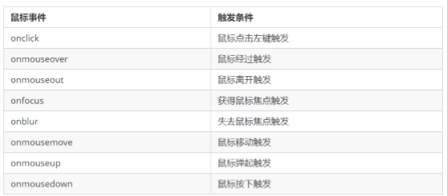
3.事件高级
1. 注册事件（绑定事件）
1.1 注册事件概述
给元素添加事件，称为注册事件或者绑定事件。
注册事件有两种方式：传统方式和方法监听注册方式
传统注册方式
- 利用 on 开头的事件 onclick
- <button onclick=“alert(‘hi~’)”>
- btn.onclick = function() {}
- 特点： 注册事件的唯一性
- 同一个元素同一个事件只能设置一个处理函数，最 后注册的处理函数将会覆盖前面注册的处理函数
方法监听注册方式
- w3c 标准 推荐方式
- addEventListener() 它是一个方法
- IE9 之前的 IE 不支持此方法，可使用 attachEvent() 代替
- 特点：同一个元素同一个事件可以注册多个监听器
- 按注册顺序依次执行
1.2 addEventListener 事件监听方式
eventTarget.addEventListener(type, listener[, useCapture])
eventTarget.addEventListener()方法将指定的监听器注册到 eventTarget（目标对象）上，当该对 象触发指定的事件时，就会执行事件处理函数。
该方法接收三个参数：
- type：事件类型字符串，比如 click 、mouseover ，注意这里不要带on
- listener：事件处理函数，事件发生时，会调用该监听函数
- useCapture：可选参数，是一个布尔值，默认是false。学完DOM 事件流后，我们再进一步学习
1.3 attachEvent 事件监听方式(只能在IE9 之前使用)
eventTarget.attachEvent(eventNameWithOn, callback)
eventTarget.attachEvent()方法将指定的监听器注册到 eventTarget（目标对象）上，当该对象触 发指定的事件时，指定的回调函数就会被执行。
该方法接收两个参数：
- eventNameWithOn：事件类型字符串，比如onclick 、onmouseover ，这里要带 on
- callback：事件处理函数，当目标触发事件时回调函数被调用
注意：IE8 及早期版本支持
1.4 注册事件兼容性解决方案
1 | function addEventListener(element, eventName, fn) { |
2. 删除事件（解绑事件）
2.1 删除事件的方式
传统注册方式
1
eventTarget.onclick = null;
方法监听注册方式
1 | eventTarget.removeEventListener(type, listener[, useCapture]); |
2.2 删除事件兼容性解决方案
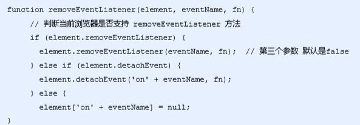
3. DOM 事件流
事件流描述的是从页面中接收事件的顺序。
事件发生时会在元素节点之间按照特定的顺序传播，这个传播过程即DOM 事件流。
比如我们给一个div 注册了点击事件：
DOM 事件流分为3个阶段：
- 捕获阶段
- 当前目标阶段
- 冒泡阶段
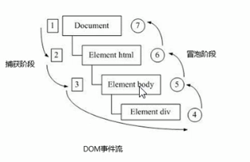
- 事件冒泡： IE 最早提出，事件开始时由最具体的元素接收，然后逐级向上传播到到DOM 最顶层节点的过程。
- 事件捕获： 网景最早提出，由DOM 最顶层节点开始，然后逐级向下传播到到最具体的元素接收的过程。
事件发生时会在元素节点之间按照特定的顺序传播，这个传播过程即DOM 事件流。
注意
JS 代码中只能执行捕获或者冒泡其中的一个阶段。
onclick 和 attachEvent 只能得到冒泡阶段。
addEventListener(type, listener[, useCapture])第三个参数如果是 true，表示在事件捕 获阶段调用事件处理程序；如果是 false（不写默认就是false），表示在事件冒泡阶段调用事件处理 程序。
实际开发中我们很少使用事件捕获，我们更关注事件冒泡。
有些事件是没有冒泡的，比如 onblur、onfocus、onmouseenter、onmouseleave
事件冒泡有时候会带来麻烦，有时候又会帮助很巧妙的做某些事件，我们后面讲解。
4. 事件对象
4.1 什么是事件对象
简单理解：事件发生后，跟事件相关的一系列信息数据的集合都放到这个对象里面，这个对象就是事件对象 event，它有很多属性和方法。
比如：
- 谁绑定了这个事件。
- 鼠标触发事件的话，会得到鼠标的相关信息，如鼠标位置。
- 键盘触发事件的话，会得到键盘的相关信息，如按了哪个键。
4.2 事件对象的使用语法
1 | eventTarget.onclick = function(event) { |
这个event 是个形参，系统帮我们设定为事件对象，不需要传递实参过去。
当我们注册事件时，event 对象就会被系统自动创建，并依次传递给事件监听器（事件处理函数）。
4.4 事件对象的常见属性和方法
e.target 和 this 的区别：
- this 是事件绑定的元素， 这个函数的调用者（绑定这个事件的元素）
- e.target 是事件触发的元素。(点击了哪个元素，就返回哪个元素)
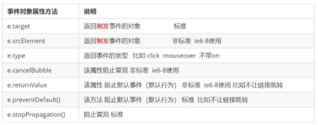
5. 阻止事件冒泡
5.1 阻止事件冒泡的两种方式
事件冒泡：开始时由最具体的元素接收，然后逐级向上传播到到DOM 最顶层节点。
事件冒泡本身的特性，会带来的坏处，也会带来的好处，需要我们灵活掌握。
阻止事件冒泡
标准写法：利用事件对象里面的 stopPropagation()方法
1 | e.stopPropagation() |
非标准写法：IE 6-8 利用事件对象cancelBubble 属性
1 | e.cancelBubble = true; |
6. 事件委托（代理、委派）
事件委托的原理
不是每个子节点单独设置事件监听器，而是事件监听器设置在其父节点上，然后利用冒泡原理影响设置每个子节点。
以上案例：给ul 注册点击事件，然后利用事件对象的target 来找到当前点击的li，因为点击 li，事件会冒泡到ul 上， ul 有注册事件，就会触发事件监听器。
7. 常用的鼠标事件
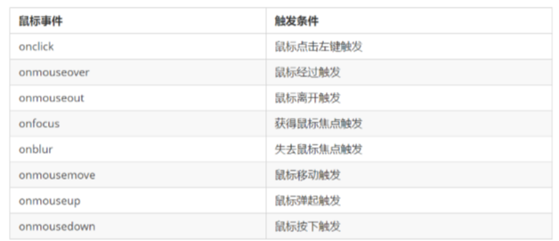
7.1 常用的鼠标事件
1.禁止鼠标右键菜单
contextmenu主要控制应该何时显示上下文菜单，主要用于程序员取消默认的上下文菜单
1 | document.addEventListener('contextmenu', function(e) { |
2.禁止鼠标选中（selectstart 开始选中）
1 | document.addEventListener('selectstart', function(e) { |
8. 常用的键盘事件
8.1 常用键盘事件
事件除了使用鼠标触发，还可以使用键盘触发。
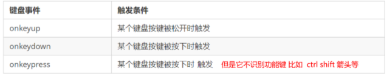
注意：
- 如果使用addEventListener 不需要加on
- onkeypress 和前面2个的区别是，它不识别功能键，比如左右箭头，shift 等。
- 三个事件的执行顺序是： keydown – keypress — keyup
8.2 键盘事件对象
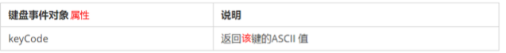
==注意==： onkeydown 和 onkeyup 不区分字母大小写，onkeypress 区分字母大小写。
在我们实际开发中，我们更多的使用keydown和keyup，它能识别所有的键（包括功能键）
Keypress 不识别功能键，但是keyCode属性能区分大小写，返回不同的ASCII值
4.BOM
1. BOM 概述
1.1 什么是 BOM
BOM（Browser Object Model）即浏览器对象模型，它提供了独立于内容而与浏览器窗口进行交互的对象，其核心 对象是 window。
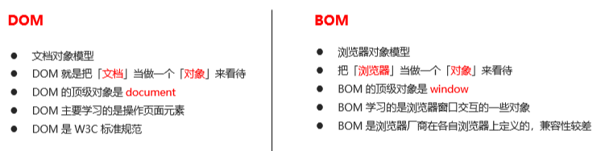
1.2 BOM 的构成
window 对象是浏览器的顶级对象，它具有双重角色。
- 它是 JS 访问浏览器窗口的一个接口。
- 它是一个全局对象。定义在全局作用域中的变量、函数都会变成window 对象的属性和方法。
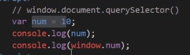
2. window 对象的常见事件
2.1 窗口加载事件
1 | window.onload = function(){} |
window.onload 是窗口 (页面）加载事件,当文档内容完全加载完成会触发该事件(包括图像、脚本文件、CSS 文件等), 就调用的处理函数。
注意：
- 有了 window.onload 就可以把 JS 代码写到页面元素的上方，因为onload 是等页面内容全部加载完毕， 再去执行处理函数。
- window.onload 传统注册事件方式只能写一次，如果有多个，会以最后一个 window.onload 为准。
- 如果使用 addEventListener 则没有限制
1 | document.addEventListener('DOMContentLoaded',function(){}) |
DOMContentLoaded 事件触发时，仅当DOM加载完成，不包括样式表，图片，flash等等。
Ie9以上才支持
如果页面的图片很多的话, 从用户访问到onload触发可能需要较长的时间,交互效果就不能实现，必然影响用 户的体验，此时用 DOMContentLoaded 事件比较合适。
2.2 调整窗口大小事件
1 | window.onresize = function(){} |
window.onresize 是调整窗口大小加载事件, 当触发时就调用的处理函数。
注意：
- 只要窗口大小发生像素变化，就会触发这个事件。
- 我们经常利用这个事件完成响应式布局。 window.innerWidth 当前屏幕的宽度
3. 定时器
3.1 两种定时器
window 对象给我们提供了2 个非常好用的方法-定时器。
- setTimeout()
- setInterval()
3.3 停止 setTimeout() 定时器
clearTimeout()方法取消了先前通过调用 setTimeout() 建立的定时器。
3.5 停止 setInterval() 定时器
clearInterval()方法取消了先前通过调用 setInterval()建立的定时器。
4. JS 执行机制
4.1 JS 是单线程
JavaScript 语言的一大特点就是单线程，也就是说，同一个时间只能做一件事。
4.2 同步和异步
为了解决这个问题，利用多核CPU 的计算能力，HTML5 提出 Web Worker 标准，允许JavaScript 脚本创 建多个线程。于是，JS 中出现了同步和异步。
4.3 同步和异步
同步任务
同步任务都在主线程上执行，形成一个执行栈。
异步任务
JS 的异步是通过回调函数实现的。
4.4 JS 执行机制
- 先执行执行栈中的同步任务。
- 异步任务（回调函数）放入任务队列中。
- 一旦执行栈中的所有同步任务执行完毕，系统就会按次序读取任务队列中的异步任务，于是被读取的异步任 务结束等待状态，进入执行栈，开始执行。
5. location 对象
5.1 什么是 location 对象
window 对象给我们提供了一个location 属性用于获取或设置窗体的URL，并且可以用于解析 URL 。 因为 这个属性返回的是一个对象，所以我们将这个属性也称为location 对象。
5.2 URL
统一资源定位符 (Uniform Resource Locator, URL) 是互联网上标准资源的地址。互联网上的每个文件都有 一个唯一的 URL，它包含的信息指出文件的位置以及浏览器应该怎么处理它。
5.3 location 对象的属性
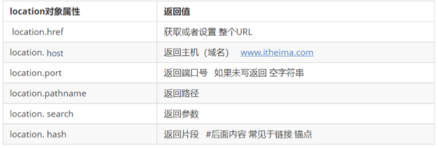
5.4 location 对象的方法
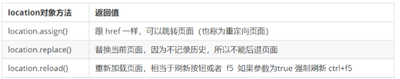
6. navigator 对象
navigator 对象包含有关浏览器的信息，它有很多属性，我们最常用的是userAgent，该属性可以返回由客 户机发送服务器的 user-agent 头部的值。
下面前端代码可以判断用户那个终端打开页面，实现跳转
1 | if((navigator.userAgent.match(/(phone|pad|pod|iPhone|iPod|ios|iPad|Android|Mobile|BlackBerry|IEMobile|MQQBrowser|JUC|Fennec|wOSBrowser|BrowserNG|WebOS|Symbian|Windows Phone)/i))) { |
7. history 对象
window 对象给我们提供了一个 history 对象，与浏览器历史记录进行交互。该对象包含用户（在浏览器窗口中） 访问过的 URL。
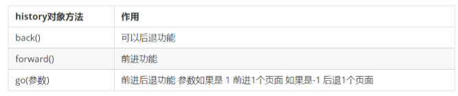
5.本地存储
1.window.sessionStorage
1、生命周期为关闭浏览器窗口
2、在同一个窗口(页面)下数据可以共享
3、以键值对的形式存储使用
存储数据：
1 | sessionStorage.setItem(key, value) |
获取数据：
1 | sessionStorage.getItem(key) |
删除数据：
1 | sessionStorage.removeItem(key) |
删除所有数据：
1 | sessionStorage.clear() |
2.window.localStorage
1、声明周期永久生效，除非手动删除否则关闭页面也会存在
2、可以多窗口（页面）共享（同一浏览器可以共享）
3、以键值对的形式存储使用
存储数据：
localStorage.setItem(key, value)
获取数据：
localStorage.getItem(key)
删除数据：
localStorage.removeItem(key)
删除所有数据：
localStorage.clear()
 wechat
wechat alipay
alipay